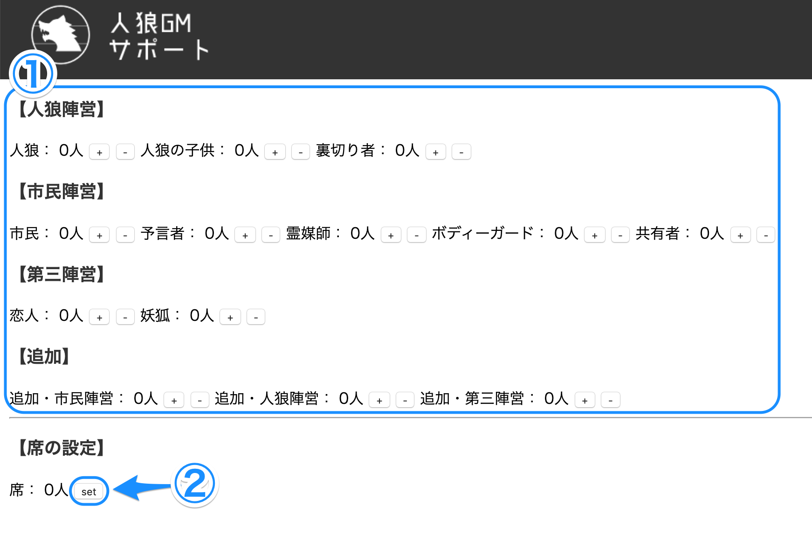
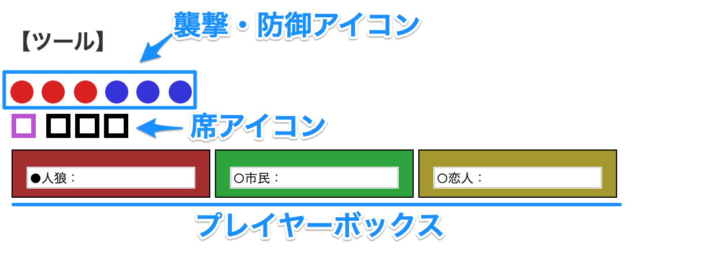
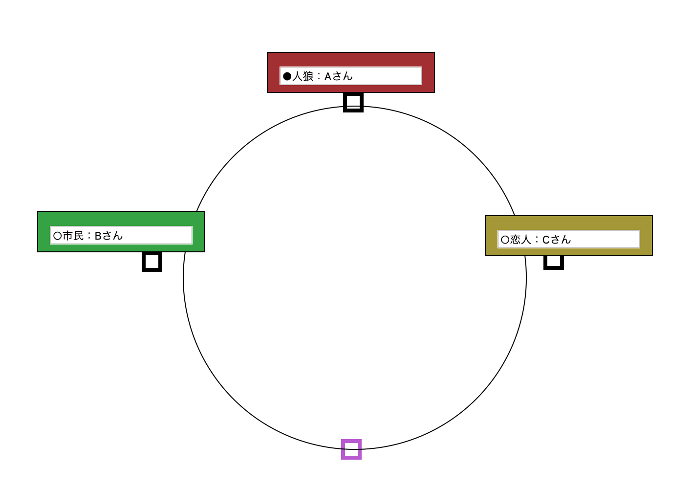

□アプリ説明
2019/10/21 公開
プレイヤーの役職を、席順でメモすることができる人狼GMサポートwebアプリです。
・円卓で人狼を行う
・プレイヤーは10人程度
・GMがプレイヤーの役職を把握するのが不得意である
そんな人狼のGMにオススメです。
動作確認済の環境は macOS Mojave ver.10.14.6 での Google Chromeのみです。
□使い方
・役職の設定
①で、今回のゲームで使用する役職を設定できます。
役職の設定が完了したら、【席の設定】欄にあるsetボタンを押してください。（②）
席用のアイコンと、役職名とプレイヤー名を記入できるプレイヤーボックスが、サイトの一番下にある【ツール】欄に追加されます。
・ツール欄の説明
・プレイヤーボックス
上記の【ツール】欄のスクショにある、色のついた箱が「プレイヤーボックス」です。
・色で陣営が一眼で分かります。赤が人狼陣営、緑が市民、恋人や妖狐などの第三陣営は黄色です。
・丸の記号は予言者(占い師)の白黒判定に使用することが出来ます。●は黒、○は白判定です。
・役職が書かれている欄にはプレイヤー名を直接入力することもできます。
・色がついている箇所をドラッグ&ドロップすると、自由にボックスを動かす事ができます。
これを【ツール】欄にある円の外周に設置することで、席順で役職を記録できます。（円卓限定）
・襲撃(赤)と防御(青)アイコン
同様にドラッグ&ドロップで動かすことが出来ます。
このアイコンは必ず、プレイヤーボックスの上に表示されます。
人狼が襲撃するプレイヤーや、ボディーガードに防御されるプレイヤーのボックス上に設置してください。
・席アイコン
紫はGM、黒はプレイヤーです。席の目印としてお使いください。
・タイマー
著作権の都合上、アラーム音は実装されていません。
入力された時間が経つと、ポップアップ表示が出現します。
・リセット方法
ページの再読み込み・更新を行うことで、全ての設定をリセットすることができます。
ver2.0時点では、保存機能の実装は未定です。